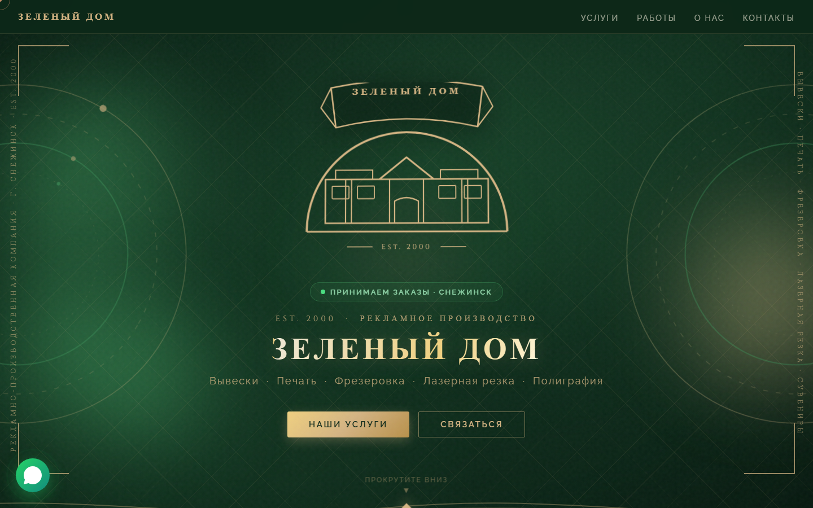
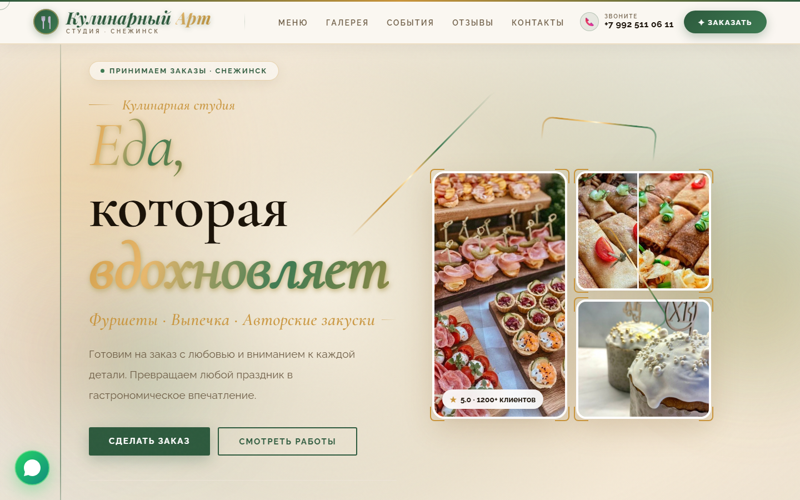

Claude не рисует пикселями — он пишет код. Это не ограничение, а преимущество: векторная графика, карусели, инфографика, которая открывается в Figma и масштабируется на любой экран без потери качества.
Многие ждут от Claude то, что делает Midjourney — генерацию реалистичных изображений по описанию. Это разные инструменты с разной природой. Claude работает иначе: не рисует, а пишет код, который браузер превращает в визуальный результат.
Ограничение это или преимущество? Зависит от задачи. Для фотореалистичного портрета — Midjourney. Для инфографики, логотипа, карусели, схемы, баннера — Claude выигрывает: результат векторный, редактируемый, воспроизводимый и открывается в Figma.

Логотипы, иконки, простые иллюстрации
✓ УмеетКарусели, баннеры, интерактивные визуалы
✓ УмеетСхемы, диаграммы, таймлайны
✓ УмеетЧерез Plotly или Chart.js
Через кодРеалистичные изображения людей
✗ Не умеетРетушь, замена фона, коррекция
✗ Не умеетСначала контент — потом оформление. Попросите агента-Автора (урок 6) написать пост на нужную тему. Из готового текста легче вычленить ключевые слайды.
«Преврати этот пост в карусель на 5–7 слайдов в формате HTML+CSS. Первый слайд — цепляющий заголовок, последний — призыв к действию. Размер слайда 1080×1080px.»
Не пытайтесь получить идеал с первого раза. «Сделай шрифты крупнее», «измени фон на тёмный», «добавь иконки» — короткие запросы работают лучше длинного первичного промпта.
| Элемент | Пример |
|---|---|
| Формат | HTML+CSS карусель / SVG логотип / инфографика |
| Размер | 1080×1080 для соцсетей / 1920×1080 для баннера |
| Цветовая палитра | Тёмный фон #1a1a2e, акцент синий #4a90e2, текст белый |
| Шрифт | Заголовки — Unbounded жирный, тело — Inter обычный |
| Содержание слайдов | Слайд 1: «5 ошибок при запуске рекламы» (заголовок). Слайд 2: Ошибка 1 — [текст]… |
| Декоративные элементы | Градиентный фон, иконки из эмодзи, тонкие линии-разделители |

Скилл — это шаблон инструкций, который Claude Code загружает в начале каждой сессии. Благодаря ему стиль визуала не «уплывает» от сессии к сессии.
Сделали несколько карусельных слайдов, которые нравятся.
«Зафиксируй стиль этого дизайна как шаблон — цвета, шрифты, размеры, отступы. Сохрани в файл skill-carousel.md»
В следующей сессии: напишите @skill-carousel.md в начале разговора — Claude прочитает шаблон и будет работать в том же стиле.
Для фотореализма, аватаров и видео Claude передаёт эстафету специализированным платформам. Higgs — пример такой платформы: объединяет несколько генеративных движков и позволяет создавать реалистичные изображения по текстовому описанию.
| Задача | Инструмент | Стоимость |
|---|---|---|
| Карусели, баннеры, инфографика | Claude Code | Бесплатно / подписка |
| Фотореалистичные изображения | Higgs, Midjourney | $15–50+/мес |
| Аватары и персонажи | Специализированные платформы | Зависит от сервиса |
| Видео | Runway, Pika Labs | Отдельная подписка |